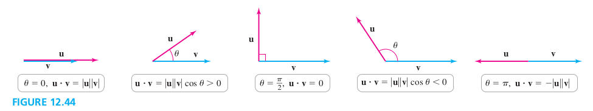

Given two nonzero vectors u and v in two or three dimensions, their dot product is
u⋅v=∣u∣∣v∣cosθ
where θ is the angle between u and v with 0⩽θ⩽π. If u=0 or v=0, then u⋅v, and θ is undefined.
The dot product of two vectors is itself a scalar. Two special cases immediately asrise:
u and v are parallel (θ=0 or θ=π) if only if u⋅v=±∣u∣∣v∣.
u and v are perpendicular (θ=π/2) if and only if u⋅v=0

Dot product Form #2
Given two vectors u=⟨u1,u2,u3⟩ and v=⟨v1,v2,v3⟩,
u⋅v=u1v1+u3v3+u3v3
If u and v are both nonzero, then
cosθ=∣u∣∣v∣u1v1+u3v3+u3v3=∣u∣∣v∣u⋅v
EXAMPLE 2 Dot products and angles
Let u=⟨3,1,0⟩, v=⟨1,3,0⟩, and w=⟨1,3,23⟩
a. Compute u⋅v
b. Find the angle between u and v.
c. Find the angle between u and w.
Solution
a. 23
b. cosθ=23
c. cosθ=43
Orthogonal Projections
(Orthogonal) Projection of u onto v
The orthogonal projection of u onto v, denoted projvu, where v≠0 is
projvu=∣u∣cosθ(∣v∣v)
The orthogonal projection may also be computed with the formulas
projvu=scalvu(∣v∣v)=(v⋅vu⋅v)v
where the scalar component of u in the directions of v is
5. Explain how to find the angle between two nonzero vectors.
Solution
Given non-zero vectors u and v, the angle between them is cos−1∣u∣∣v∣u⋅v.
9–12. Dot product from the definition Consider the following vectors u and v. Sketch the vectors, find the angle between the vectors, and compute the dot product using the definition u⋅v=∣u∣∣v∣cosθ.
9. u=4i,v=6j
Solution
The vector u(x+) is perpendicular to the vector v (y+). Therefore θ=2π, u and v are orthogonal, and u⋅v=0.
13. Dot product from the definition Compute u⋅v if u and v are unit vectors and the angle between them is 3π.
Solution
u⋅v=∣u∣∣v∣cosθ=1×1×cos3π=21
15–24. Dot products and angles Compute the dot product of the vectors u and v, and find the angle between the vectors.
17. u=i,v=i+3j
37–42. Computing work Calculate the work done in the following situations.
37. A suitcase is pulled 50 ft along a flat sidewalk with a constant force of 30 lb at an angle of 30° above the horizontal.
40. A constant force F=⟨4,3,2⟩ (in newtons) moves an object from ⟨0,0,0⟩ to ⟨8,6,0⟩. (Distance is measured in meters.)
Solution
w=F⋅d=⟨4,3,2⟩⋅⟨8,6,0⟩=4×8+3×6+0=50J
43–46. Parallel and normal forces Find the components of the vertical force F=⟨0,−10⟩ in the directions parallel to and normal to the following planes. Show that the total force is the sum of the two component forces.
45. A plane that makes an angle of π/3 with the positive x-axis.
Solution
v=⟨21,−23⟩. Let the component parallel to F be P, and normal to F be N.
48–52. Orthogonal vectors Let a and b be real numbers.
49. Find all vectors ⟨1,a,b⟩ orthogonal to ⟨4,−8,2⟩.
Solution
When two vectors are orthogonal, their dot product is 0.
⇒⇒⟨1,a,b⟩⋅⟨4,−8,2⟩=04−8a+2b=0b=4a−2
These vectors have the form of ⟨1,a,4a−2⟩.
54–57. Vectors with equal projections Given a fixed vector v, there is an infinite set of vectors u with the same value of projvu.
55. Let v=⟨1,1⟩. Give a description of the position vectors u such that projvu=projv⟨1,2⟩.
Solution
Todo
58–61. Decomposing vectors For the following vectors u and v, express u as the sum u=p+n, where p is parallel to v and n is orthogonal to v.
59. u=⟨−2,2⟩,v=⟨2,1⟩
62–65. Distance between a point and a line Carry out the following steps to determine the (smallest) distance between the point P and the line ℓ through the origin.
a. Find any vector v in the direction of ℓ.
b. Find the position vecter u corresponding to P.
c. Find projvu.
d. Show that w=u−projvu is a vector orthogonal to v whose length is the distance betwee P and the line ℓ.
e. Find w and ∣w∣. Explain why ∣w∣ is the distance between P and ℓ.
63. P(−12,4);ℓ:y=2x
Solution
a. v=⟨1,2⟩
b. u=⟨−12,4⟩
c. projvu=v⋅vu⋅vv=⟨−54,−58⟩.
d. w=u−projvu=⟨−556,528⟩ and w⋅v=0. Therefore, w and v are orthogonal.
e. ∣w∣=5285. ∣w∣ is the component of u orthogonal to v, so it is the distance from P to ℓ.
69. Orthogonal unit vectors in \R^3 Consider the vectors I=⟨21,21,21⟩, J=⟨−21,21,0⟩, K=⟨21,21,−21⟩
a. Sketch I, J, and K and show that they are unit vectors.
b. Show that I, J, and K are pairwise orthogonal.
c. Express the vector ⟨1,0,0⟩ in terms of I, J, and K.
Solution
a. ∣I∣=(21)2+(21)2+(21)2=1, ∣J∣=(−21)2+(21)2+02=1, and ∣K∣=(21)2+(21)2+(−21)2=1
b. I⋅J=−221+221=0, I⋅K=41+41−21=0, and J⋅K=−221+221=0
c. Let ⟨1,0,0⟩=aI+bJ+cK,
72. Flow through a circle Suppose water flows in a thin sheet over the xy-plane with a uniform velocity given by the vector v=⟨1,2⟩; this means that at all points of the plane, the velocity of the water has components 1 m/s in the x-direction and 2 m/s in the y-direction (see figure). Let C be an imaginary unit circle (that does not interfere with the flow). Graph (72).
Solution
Todo
84–88. Cauchy-Schwarz Inequality The definition u⋅v=∣u∣∣v∣cosθ implies that∣u⋅v∣⩽∣u∣∣v∣ because ∣cosθ∣⩽1. This inequality, known as the Cauchy–Schwarz Inequality, holds in any number of dimensions and has many consequence.
85. Verify that the Cauchy–Schwarz Inequality holds for u=⟨3,−5,6⟩ and v=⟨−8,3,1⟩.